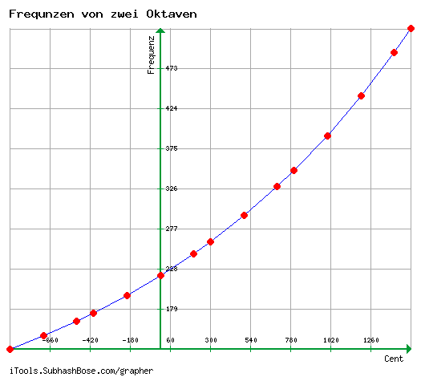
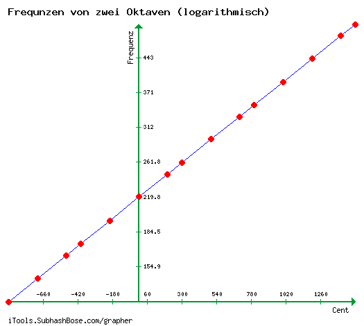
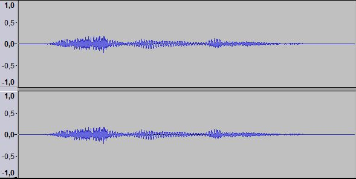
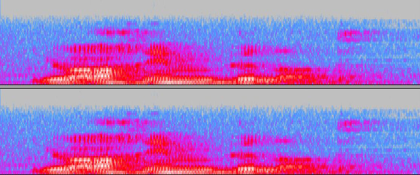
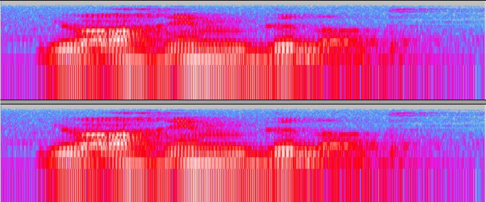
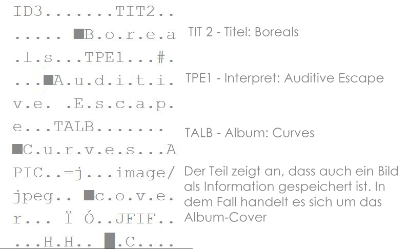
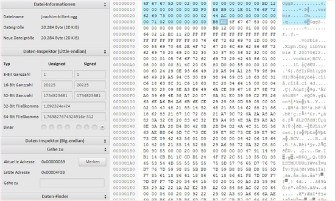
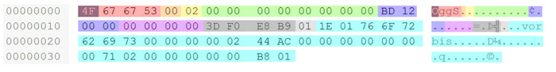
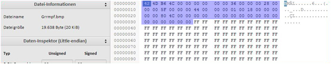
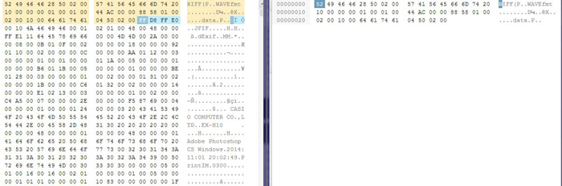

In der Musik teilt man Oktaven in Cent ein. So ist eine Oktave 1200 Cent groß. d.h. zwischen den Halbtönen ist jeweils 100 Cent Abstand. Will man nun die Frequenz eines Tons berechenen braucht man die Formel: \[ f = \sqrt[1200]{2^n} \cdot f_a \] \(f_a\) stellt dabei die Frequenz des Tones a da, welche 220 Hz beträgt. Für \(n\) setzt man nun den Abstand zwischen a und dem zuberechnenden Ton in Cent ein. \[ \begin{align*} f_c &= \sqrt[1200]{2^{(-900)}} \cdot 220 \texttt{ Hz} = 130,8128 \texttt{ Hz} \\ f_d &= \sqrt[1200]{2^{(-700)}} \cdot 220 \texttt{ Hz} = 146,8324 \texttt{ Hz} \\ f_e &= \sqrt[1200]{2^{(-500)}} \cdot 220 \texttt{ Hz} = 164,8138 \texttt{ Hz} \\ f_f &= \sqrt[1200]{2^{(-400)}} \cdot 220 \texttt{ Hz} = 174,6141 \texttt{ Hz} \\ f_g &= \sqrt[1200]{2^{(-200)}} \cdot 220 \texttt{ Hz} = 195,9977 \texttt{ Hz} \\ f_a &= \sqrt[1200]{2^{0}} \cdot 220 \texttt{ Hz} = 220,0000 \texttt{ Hz} \\ f_h &= \sqrt[1200]{2^{200}} \cdot 220 \texttt{ Hz} = 246,9417 \texttt{ Hz} \\ f_{c'} &= \sqrt[1200]{2^{300}} \cdot 220 \texttt{ Hz} = 261,6256 \texttt{ Hz} \\ f_{d'} &= \sqrt[1200]{2^{500}} \cdot 220 \texttt{ Hz} = 293.6648 \texttt{ Hz} \\ f_{e'} &= \sqrt[1200]{2^{700}} \cdot 220 \texttt{ Hz} = 329,6276 \texttt{ Hz} \\ f_{f'} &= \sqrt[1200]{2^{800}} \cdot 220 \texttt{ Hz} = 349,2282 \texttt{ Hz} \\ f_{g'} &= \sqrt[1200]{2^{1000}} \cdot 220 \texttt{ Hz} = 391,9954 \texttt{ Hz} \\ f_{a'} &= \sqrt[1200]{2^{1200}} \cdot 220 \texttt{ Hz} = 440,0000 \texttt{ Hz} \\ f_{h'} &= \sqrt[1200]{2^{1400}} \cdot 220 \texttt{ Hz} = 493,8833 \texttt{ Hz} \\ f_{c"} &= \sqrt[1200]{2^{1500}} \cdot 220 \texttt{ Hz} = 523,2511 \texttt{ Hz} \\ \end{align*} \]
Die Frequenzen als linearer Graph, geplottet mit Grapher
Und das Ganze noch mal als logarithmischer Graph (logarithmische Y-Achse), ebenfalls geplottet mit Grapher
Bei Zonenplatten wird mit Hilfe von in konzentrischen Kreisen angelegten und sich abwechselnden transparenten und getrübten Zonen (den sog. Fresnel-Zonen) Licht fokusiert. Dabei wird das Licht gebeugt und nicht gebrochen. Durch Veränderung der Zonen kann man durch Interferenz bestimmte Welenlängen in einem Brennpunkt fokusieren.
(Quelle: Fresnel-Zonenplatte)
Die Bilderserie zeigt eine Fresnel-Zonenplatte, welche erst auf 50 x 50 Pixel skaliert und dann in Orginalgröße zurückversetzt wurde. Bei der Verkleinerung um 75 % gehen auch 75 % der Pixel verloren. Bei der Vergrößerung fehlen diese 75 %. Diese fehelenden Stellen werden nun mit den Farben der noch übrigen Pixel wieder aufgefüllt. So erscheinen im rexhten Bild die Pixel größer.
Um es mit dem Abtasttheorem zu beschreiben: das Orginal wird bei der Verkleinerung mit einer Abtastfrequenz von 50 Pixeln abgetastet. Es wird also nur jeder 4. Pixel erfasst. Die verkleinerung hat also nur \(\frac{1}{4}\) der Menge der Pixel des Orginals. Dies wird als Alias-Effekt bezeichnet. Wird diese Verkleinerung wieder mit 200 Pixeln abgetastet, haben 4 Pixel in Folge den selben Wert. Das erklärt, warum das nun neu entstandene Bild "verpixelt" wirkt.
Die Orginal Datei, einfach nochmal zur Erinnerung.
Der Zeitverlauf der unkomprimierte Datei
Spektogramm der oberen Audiodatei.
Logarithmisches Spektogramm der oberen Audiodatei.
Die Datei rückwärts.
Öffnet man eine Audiodatei in einem Hexeditor, sieht man, dass im Hexcode auch Metadaten , also Informationen über Interpreten, Albumname, Dateiname, Jahr usw. gespeichert sind.
Im oberen Bild ist ein Beispiel für Metadaten. Ich verwendete dafür das Lied Boreals von Auditive Escape aus dem Album Curves. Wie man sieht sind Titel, Album, Interpret und das Album-Cover als Metadaten gespeichert.
Öffnet man die konvertierte Ogg-Datei in einem Hexeditor (in meinem Fall war es der auf HTML5/JavaScript-basierende HexEdit.js von Jens Duttke) erhält man folgendes Bild:
Dabei stellen die markierten 58 Byte den Header dar. Die Bytes im Header sagen z.B. etwas darüber aus, um welchen Dateityp es sich handelt (in diesem Fall ".ogg"). Der konkrete Aufbau (nach: Ogg# page structures) ist folgender:
Capture Pattern
Der Capture Pattern zeigt an, um welche Datei es sich handelt. Bei Ogg ist er immer 4F 67 67 53 (OggS). Er steht bei jeder Seite (page) am Anfang.
Version
Der Versionsabschnitt zeigt die Version des Bitstreams an und liegt bei Ogg immer bei 00.
Header Type
Der Header Type zeigt, ob es sich bei der Seite um den Anfang (02), das Ende (03) oder eine Fortsetzung (00) des Streams ist.
Granule Position
In diesem Abschnitt wird gezeigt wieviel Samples die seite hat.
Bitstream Serial Number
Die Bitstream Serial Number spezifiziert den Bitstream.
Page Sequence Number
Die Page Sequence Number vergibt an jede Seite eine Nummer. Dabei geht es bei der ersten Seite mit 0 los usw.
Checksum
Die Checksum ist eine Prüfsumme, welche testet, ob die Datei in Ordnung ist.
Page segments
Hier wird die Anzahl der Segmente festgellegt die im nächsten Abschnitt auftauchen sollen.
Segment table
Hier wird über die Größe der einzelnen Segment auskunft gegeben.
Um aus der ".ogg"-Datei eine Bitmapdatei zu machen, muss an den Ogg-Header mit einem geeigneten Bitmap-Header austauschen. Dafür hab ich mit einem Bildbearbeitungsprogramm (in meinem Fall war es Paint) eine weiße Bitmapdatei erstellt, deren Dateigröße \(\le \) der Dateigröße des zu konvertierenden Ogg-Files ist.
Auch hier ist der Header farblicher hervorgehoben. Nun hieß es, Ogg-Header löschen und den Bitmap-Header einfügen.
Beim Umwandlungsvorgang einer Bilddatei in eine Audiodatei, geht man im Grunde wie oben vor. Der Unterschied liegt darin, dass man in diesem Beispiel (JPG zu WAV), den JPG-Header nicht entfernen muss, sondern den WAV-Header einfach vor den JPG-Header legt.
Links: Die unten abspielbare JPG-Datei, Rechts: Der WAV-Header.
Bitte beim Abspielen den Lautstärkeregler runterstellen. Könnte unter Umständen laut werden.